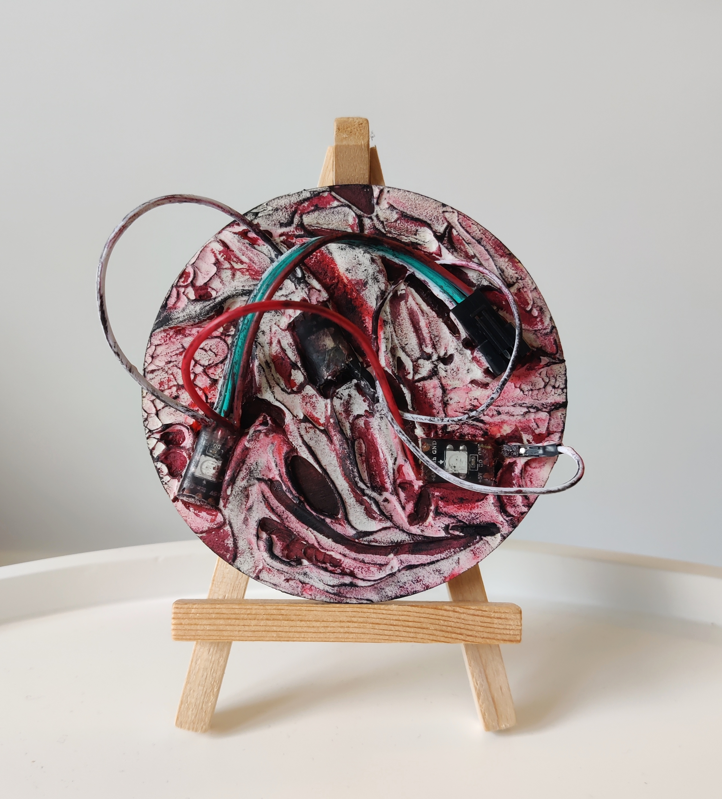
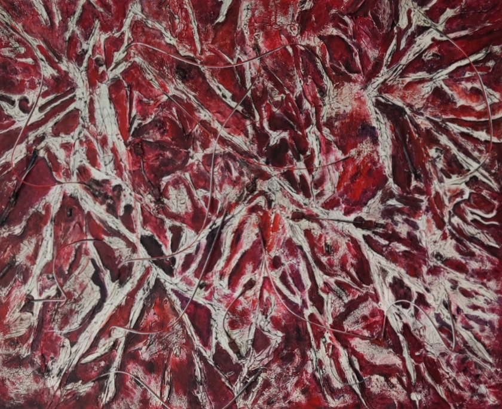
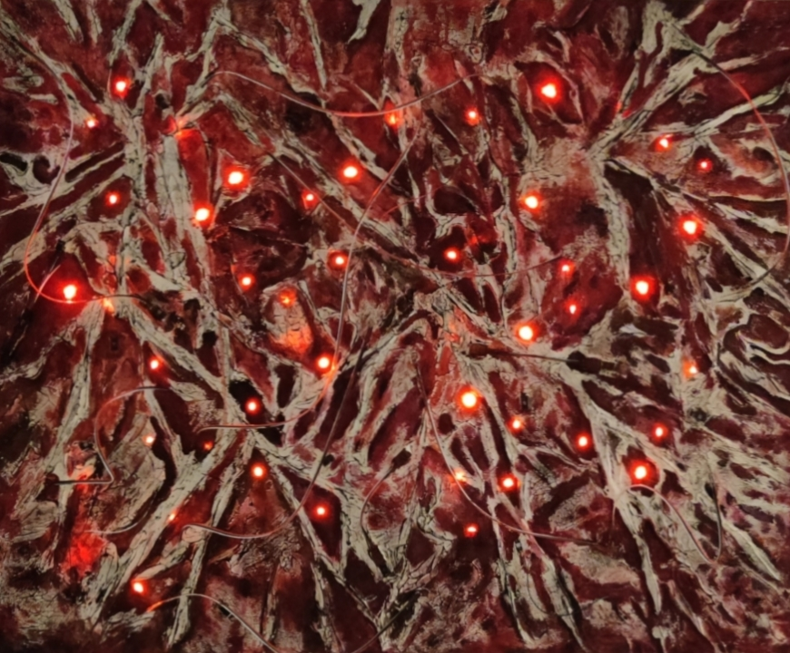
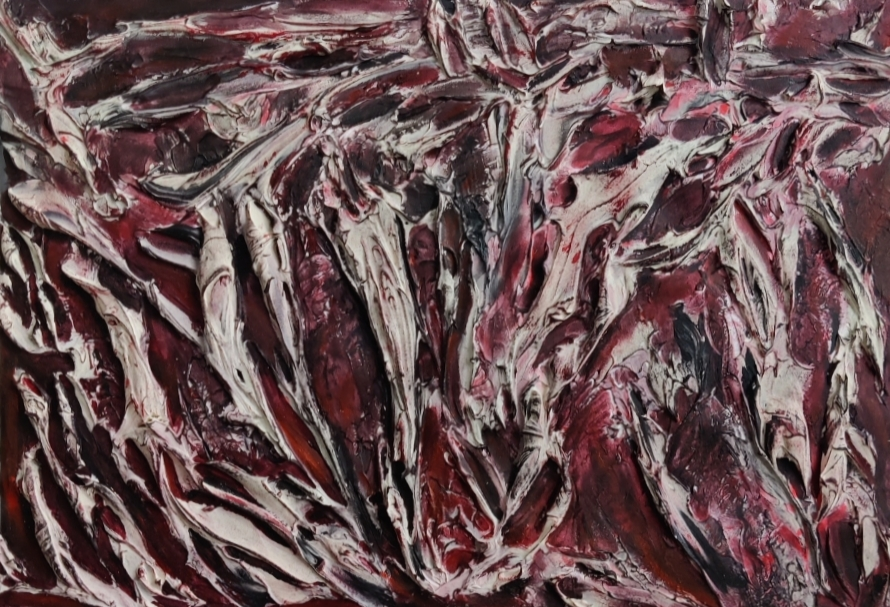
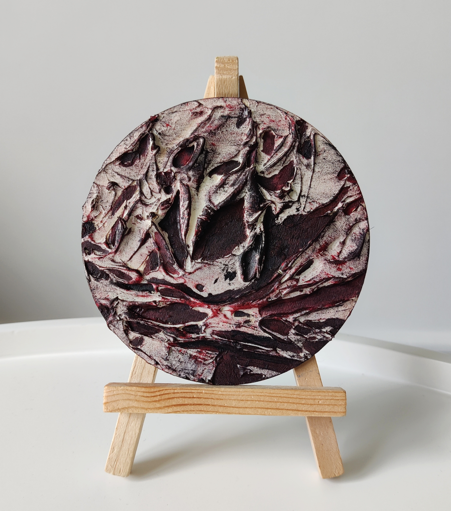
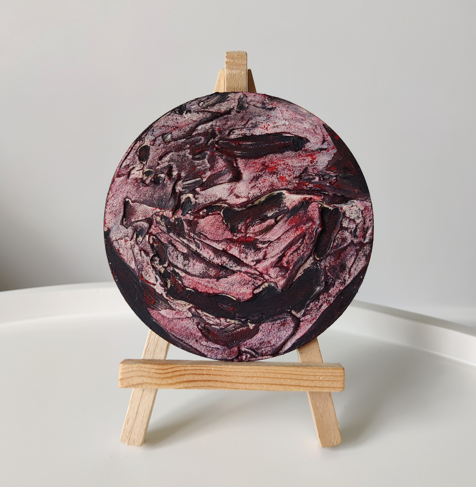
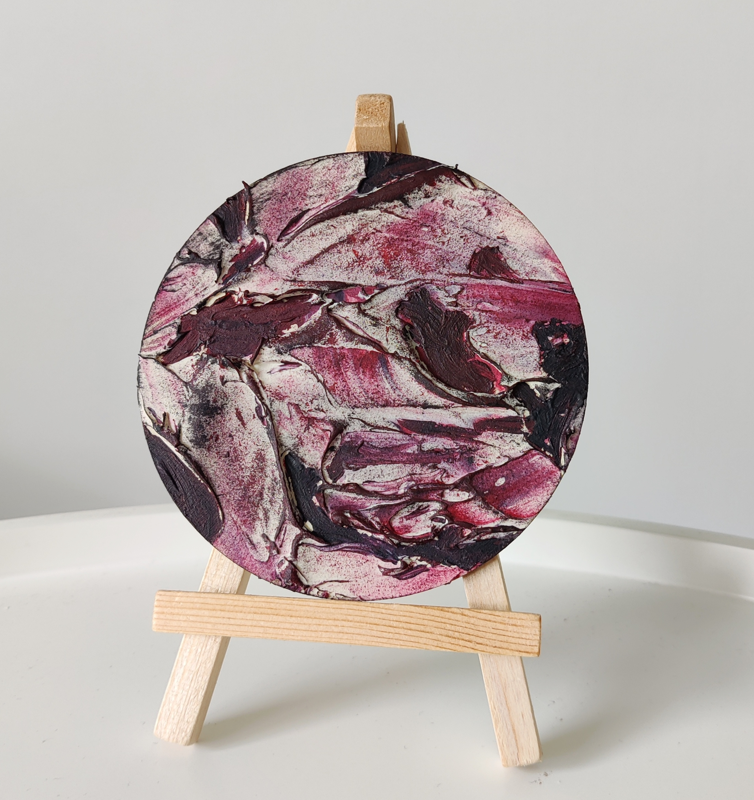

Peintures texturées mêlant abstraction, art brut et sculpture, à la frontière entre cauchemar et réalité.

Fever Dream, acrylique, LED brûlées, fils éléctriques sur bois diamètre 10cm, 2025

Self portrait | Le Monstre [Jour], acrylique, LEDs, fils éléctriques, 2025

Self portrait | Le Monstre [Nuit], acrylique, LEDs, fils éléctriques, 2025

Tendons, acrylique texturé sur bois format A5, 2025
Inferno | Screams, acrylique très texturé sur canvas 20x20cm, 2024
Gut Feeling, acrylique texturé sur bois diamètre 10cm, 2025
Cris, acrylique texturé sur bois diamètre 10cm, 2025
Vaisseaux, acrylique sur bois diamètre 10cm, 2025

Scratches, acrylique texturé sur bois diamètre 10cm, 2024

Headache, acrylique texturé sur bois diamètre 10cm, 2024
Mini Inferno, acrylique texturé sur bois diamètre 10cm, 2024

Mini Inferno 2, acrylique sur bois diamètre 10cm, 2024